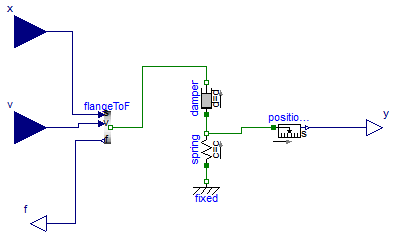
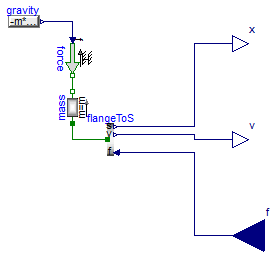

For all models in this package an FMU must be generated
Information
Extends from Modelica.Icons.Package (Icon for standard packages).
Package Content

Information
Extends from Modelica.Blocks.Interfaces.BlockIcon (Basic graphical layout of input/output block).
Parameters
Connectors
| Type | Name | Description |
|---|
| input RealInput | x | Position at connection point of spring-damper systeme |
| input RealInput | v | Velocity at connection point of spring-damper system |
| output RealOutput | f | Cut-Force at connection point of spring-damper system |
| output RealOutput | y | Length of serial spring |
Modelica definition
model SpringDamper
extends Modelica.Blocks.Interfaces.BlockIcon;
parameter Modelica.SIunits.TranslationalSpringConstant c=1
"Stiffness of serial spring";
parameter Modelica.SIunits.TranslationalDampingConstant d=0.1
"Damping facgtor of serial spring";
parameter Modelica.SIunits.Position y0=1.5
"Initial length of serial spring";
Modelica.Mechanics.Translational.Components.Fixed fixed;
Modelica.Mechanics.Translational.Components.Spring spring(
c=c,
s_rel0=y0,
s_rel(fixed=true, start=y0));
Modelica.Mechanics.Translational.Components.Damper damper(d=d);
Utilities.TransFlangeToF flangeToF(enable_a=false);
Modelica.Blocks.Interfaces.RealInput x
"Position at connection point of spring-damper systeme";
Modelica.Blocks.Interfaces.RealInput v
"Velocity at connection point of spring-damper system";
Modelica.Blocks.Interfaces.RealOutput f
"Cut-Force at connection point of spring-damper system";
Modelica.Mechanics.Translational.Sensors.PositionSensor positionSensor;
Modelica.Blocks.Interfaces.RealOutput y
"Length of serial spring";
equation
connect(spring.flange_a, fixed.flange);
connect(spring.flange_b, damper.flange_a);
connect(flangeToF.flange, damper.flange_b);
connect(flangeToF.s, x);
connect(v, flangeToF.v);
connect(flangeToF.f, f);
connect(spring.flange_b, positionSensor.flange);
connect(positionSensor.s, y);
end SpringDamper;

Information
Extends from Modelica.Blocks.Interfaces.BlockIcon (Basic graphical layout of input/output block).
Parameters
| Type | Name | Default | Description |
|---|
| Mass | m | 0.005 | Mass of body connected to spring [kg] |
| Position | x0 | 2 | Initial position of mass over ground [m] |
Connectors
| Type | Name | Description |
|---|
| output RealOutput | x | Flange moves with position s due to force f |
| output RealOutput | v | Flange moves with speed v due to force f |
| input RealInput | f | Force to drive the flange |
Modelica definition
model MassWithGravity
extends Modelica.Blocks.Interfaces.BlockIcon;
parameter Modelica.SIunits.Mass m=0.005
"Mass of body connected to spring";
parameter Modelica.SIunits.Position x0=2
"Initial position of mass over ground";
Modelica.Mechanics.Translational.Components.Mass mass(
m=m,
s(fixed=true, start=x0),
v(fixed=true, start=0));
Modelica.Mechanics.Translational.Sources.Force force;
Modelica.Blocks.Sources.RealExpression gravity(y=-m*9.81*x);
Utilities.TransFlangeToS flangeToS(enable_a=false);
Modelica.Blocks.Interfaces.RealOutput x
"Flange moves with position s due to force f";
Modelica.Blocks.Interfaces.RealOutput v
"Flange moves with speed v due to force f";
Modelica.Blocks.Interfaces.RealInput f
"Force to drive the flange";
equation
connect(force.flange, mass.flange_b);
connect(gravity.y, force.f);
connect(flangeToS.flange, mass.flange_a);
connect(flangeToS.s, x);
connect(flangeToS.v, v);
connect(flangeToS.f, f);
end MassWithGravity;
Automatically generated Fri Apr 25 16:23:02 2014.
 FMITest.VirtualLoops.MassSpringDamper.FMUModels.MassWithGravity
FMITest.VirtualLoops.MassSpringDamper.FMUModels.MassWithGravity